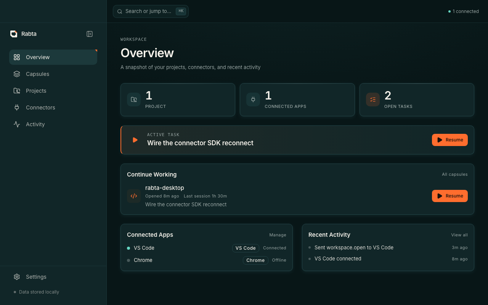

Local-first · macOS · v0.1.0
Save your entire coding context. Return to it later.
Rabta captures a task's whole workspace — the files and terminals in your editor, your browser tabs, and your git branch — into a capsule. Reopen it and your files, terminals, tabs, and branch open right back up.
One local hub on 127.0.0.1 — a task, captured across your tools
The capsule
One task. Its whole workspace, captured.
You work in tasks, not windows. Your editor and browser connect to a single local hub; Rabta snapshots the files, terminals, tabs, and git branch that belong to the task you're on.
A saved snapshot of a task's state
A capsule records which files, terminals, tabs, and branch a task was using — the pointers, not the contents. Save it when you switch away; resume it to reopen that workspace. Switching tasks auto-saves the one you're leaving.
Editor files & workspace
The open files, folders, and terminals in Cursor or VS Code — reopened on the same workspace.
Editor terminals
The terminals you had open and their working directories, brought back with the task.
Browser tabs
The tab URLs & titles that belong to the task — reopened when you restore it. Page contents are never read.
Git branch & project
The repository, its current branch, and the project the task lives in. Restores put you back on the right branch — never a forced checkout.

Local-first, by construction
Your code and context never leave your Mac.
Rabta has no backend to send anything to. The app and its connectors run entirely on your machine, and connectors talk only to the hub on 127.0.0.1.
Nothing to sign into
No login, no profile, no email required. You open the app and use it.
There is no Rabta server
No sync service and no remote storage — capsules live in a folder on your disk.
No analytics or tracking
No usage pings, no crash reporting service, no cookies, no ads.
Only pointers, not contents
Rabta stores file paths, branch names, and tab URLs — never file contents, terminal output, or page data.
You approve the browser
The Chrome connector pairs only after you click Approve in the app, and reads just tab URLs and titles.
Localhost only
The hub binds to 127.0.0.1 and is never exposed to the network.
Read the full privacy policy.
Install
Download, drag, launch.
A signed, notarized app that installs like any other Mac app — no right-click tricks, no Gatekeeper warnings.
Download & open the DMG
Grab Rabta_0.1.0_aarch64.dmg and double-click it to mount.
Drag Rabta to Applications
Drop the Rabta icon into the Applications folder shown in the window.
Launch it
Open Rabta from Applications, Spotlight, or Launchpad. It opens and starts its local hub.
Add the editor connector
Install the Cursor / VS Code connector from Open VSX — it connects automatically and shows up in Rabta's Connectors view.
Add the browser connector
The Chrome connector arrives once it clears Web Store review. Approve the pairing once in the app.
Work in tasks
Register a project, save a capsule, switch away, and resume — your workspace comes back.
Connectors
Connect your editor and browser.
The desktop app captures and restores; the connectors are the thin bridges that let it see your editor and browser. Each connects only to the local hub.
Cursor / VS Code
Available nowSnapshots and reopens your open files, workspace folder, and terminals. Installs from Open VSX — which Cursor, VSCodium, and Windsurf install from directly.
rabta-connect.rabta-vscode · v0.1.0Chrome
Pending reviewCaptures the tab URLs and titles that belong to a task and reopens them on restore. It pairs only after you approve it in Rabta, and can never read page contents.
Rabta Connector · id aaombpafbhjkoinppogieaclijddleboDownload integrity
Signed, notarized, and verifiable.
The Mac app is signed with an Apple Developer ID and notarized by Apple, so it opens with a normal double-click. Verify the download yourself before you run it.
Release
- Version
- 0.1.0
- File
- Rabta_0.1.0_aarch64.dmg
- Arch
- macOS arm64 · Apple Silicon
- Min OS
- macOS 11.0 (Big Sur)
- Size
- 5,495,778 bytes
- Team ID
- 86M2X6MUA3
Verify the SHA-256
After downloading, run this in Terminal — the output must match exactly.
3978ec57af7d37ab32670033d679c21a28cf74cebb0435ce011049e05635c655
v0.1.0 · Apple Silicon · 5.5 MB · com.omnibus.dev